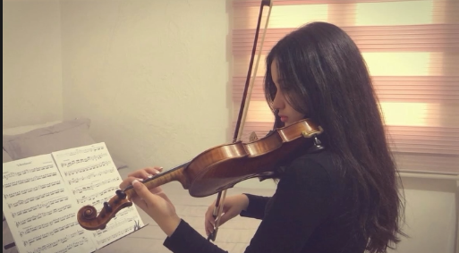
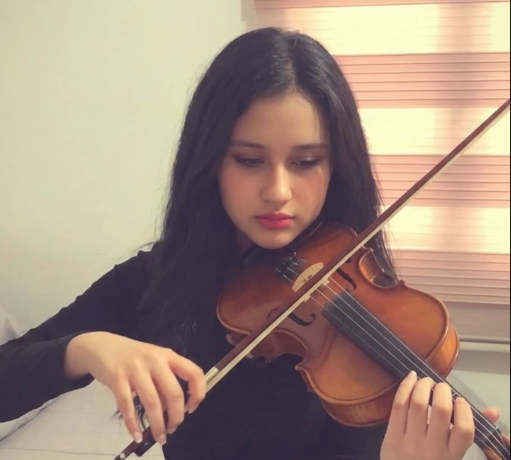

La música que hace inolvidable cada momento
Marié es un proyecto artístico de violín: presentaciones solo con el sonido del instrumento, hechas con alma e intención.
Una pasión convertida en empresa
Marié nace del amor por el violín y de la inspiración de artistas performance como Lindsey Stirling. Ofrecemos presentaciones para reuniones, matrimonios, cumpleaños y celebraciones familiares o empresariales, adaptando el repertorio a cada cliente. Cada vestuario es diseñado y confeccionado a mano, porque la moda también es una forma de arte.
Misión
Ofrecer presentaciones de violín para diferentes eventos, usando la música para acompañar y hacer más especiales los momentos importantes de las personas, interpretando cada obra con alma e intención y uniendo música y moda hecha a mano.
Visión
Ser un proyecto artístico reconocido por sus presentaciones y la calidad de su servicio, con identidad sólida, colaboraciones con otros músicos y, a futuro, música propia con alcance mundial, siempre con el violín en el centro.
Noticias del mundo del violín
El arco suena gracias a un caballo
Las cerdas del arco son de crin de caballo. Con un poco de resina agarran la cuerda y la hacen vibrar: sin eso, el violín casi no suena.
Violines de más de 300 años siguen en escena
Los instrumentos que Antonio Stradivari construyó en Cremona siguen tocándose hoy en grandes conciertos, y su sonido aún inspira a luthiers de todo el mundo.
El violín sale del atril
Artistas como Lindsey Stirling mezclan violín, danza y vestuario en shows en vivo, una forma de presentación que inspira a nuevas violinistas.
Se viene vestuario nuevo
Marié prepara nuevas piezas hechas a mano para sus próximas presentaciones. Los avances se publican primero en Instagram.
@marie.violinSobre Marié
Marié es un proyecto artístico de violín solista. Une la música en vivo con el diseño de vestuarios hechos a mano para que cada presentación sea una experiencia completa: se escucha y también se ve.


Historia de Marié
Marié nació de mi pasión por el violín y de mi sueño de convertir la música en una forma de expresión y trabajo. Inspirada por artistas como Lindsey Stirling, decidí crear un proyecto donde pudiera ofrecer presentaciones de violín en diferentes eventos.
Con ayuda de las redes sociales, quiero dar a conocer mi música, crear mi propia identidad artística y combinar el violín con otra de mis pasiones: la moda.
A futuro, sueño con crear mi propia música, crecer como artista y convertir a Marié en un proyecto reconocido a nivel mundial.
Inspiración
Lindsey Stirling, violinista y artista performance que combina violín, danza y vestuario, es una de las referencias del enfoque escénico de Marié.
Lo que nos guía
Intención
Cada obra se interpreta con alma, pensando en quien la escucha.
Personalización
El repertorio se adapta a la historia y al gusto de cada cliente.
Arte integral
Música y moda hecha a mano en una misma propuesta.
Cercanía
Comunicación clara y cálida antes, durante y después del evento.
Música en vivo para tu evento
Presentaciones de violín solista con repertorio adaptado a cada celebración.
Bodas
Acompañamiento en la ceremonia, el cóctel y la entrada de los novios.
Cumpleaños
Sorpresas musicales y repertorio con las canciones favoritas del homenajeado.
Reuniones familiares
Aniversarios, grados y encuentros con un ambiente musical especial.
Eventos empresariales
Lanzamientos, cenas y celebraciones corporativas con un toque elegante.
Cómo trabajamos
Cuéntame
Escribes los detalles de tu evento en el formulario de contacto.
Personalizamos
Definimos repertorio, duración y momentos musicales.
Cotizamos
Recibes una propuesta. [Las tarifas las defines tú; no se publican valores sin confirmar.]
Celebramos
Llego con mi violín y mi vestuario para que el momento sea único.
Semanas
Todas las actividades del curso, ordenadas por semana. Elige una para ver su producto.
Newsletter
Productividad y economía digital
NewsletterSin actividad
Esta semana no tiene entrega
—Criptomonedas
Presentación e infografía
Presentación · InfografíaEstrategia de comunicación
Mapa conceptual interno y externo
Mapa conceptualOrganización y creatividad
Google Calendar y herramientas para generar ideas
Planificación en Google Calendar · InvestigaciónFINTECH y economía digital
Artículo de revista
Artículo de revistaMarketing digital e inbound
Estrategia y presentación eficaz
Estrategia inbound · Presentación
Sin actividad
Esta semana no tiene entrega
Semana sin actividad
En el plan del curso, la semana 2 no tiene una actividad asignada.
Criptomonedas
Presentación e infografía
Productos y servicios que se comercializan con criptomonedas
Presentación sobre los productos que hoy se pagan con criptomonedas, cómo funcionan las transacciones y cómo hacerlas de forma segura.


Exchanges, wallets y transacciones con Bitcoin
Infografías que explican cómo intervienen el exchange, la wallet y la blockchain en una transacción con Bitcoin.


Estrategia de comunicación
Mapa conceptual interno y externo
Mapa conceptual: estrategia de comunicación de Marié

Organización y creatividad
Google Calendar y herramientas para generar ideas
Planificación de actividades con Google Calendar
Herramientas y técnicas para solucionar problemas y generar ideas


FINTECH y economía digital
Artículo de revista
Artículo de revista: Revolución de FINTECH

Marketing digital e inbound
Estrategia y presentación eficaz
Estrategia de marketing digital e inbound
Estrategia de Marié con cuatro tipos de contenido digital.
Educativo
Tips de violín y consejos para elegir la música de un evento. Atrae.
Inspiracional
Fotos de vestuarios y momentos de presentaciones. Emociona.
Comunidad
Detrás de cámaras, historias de eventos, preguntas y respuestas. Conecta.
Conversión
Llamados a cotizar, formulario de contacto y testimonios reales cuando existan. Convierte.
Atraer
Las redes sociales llevan visitas al sitio web.
Convertir
El formulario y el WhatsApp transforman visitantes en solicitudes de cotización.
Fidelizar
Newsletter y seguimiento tras el evento generan recomendación.
Presentación eficaz


Reserva tu fecha
Cuéntame sobre tu evento y te respondo con una propuesta personalizada.